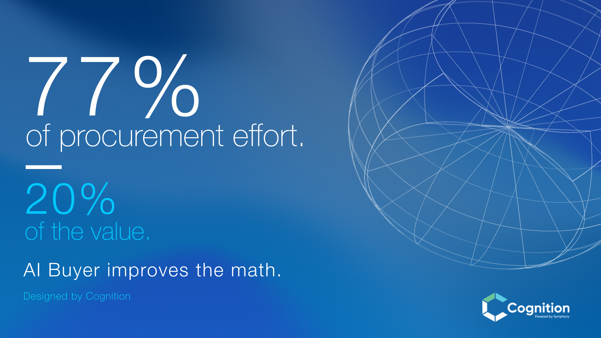
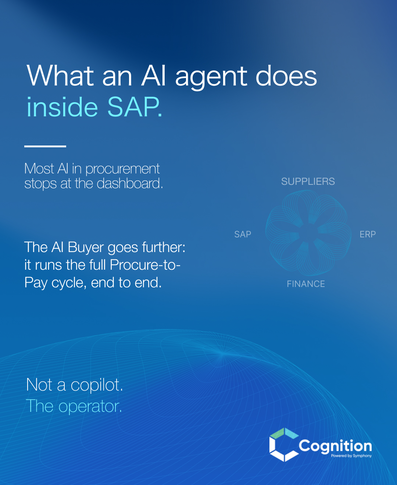
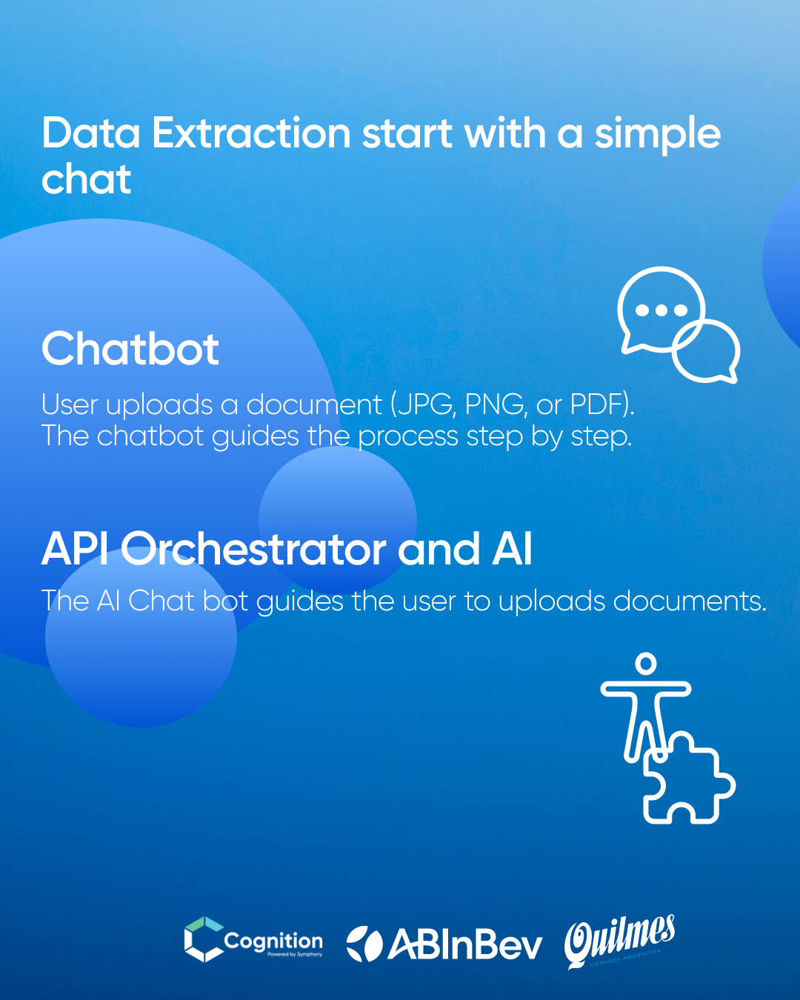
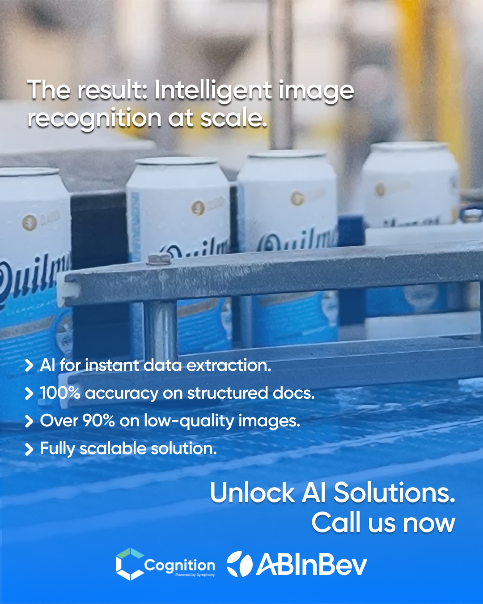
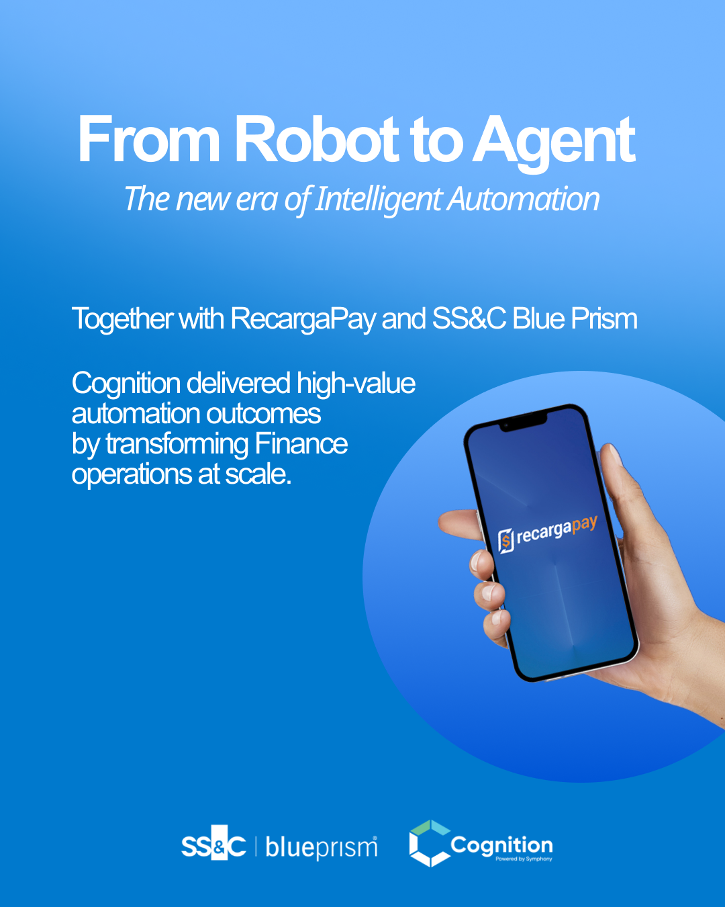

Foco estratégico
Definición de públicos, problemas, mensajes prioritarios y criterios para conectar con decisores en los mercados objetivo.
Caso de estudio · Tecnología B2B
Vicky tradujo IA, RPA y automatización en una comunicación B2B clara para decisores y ordenó un ecosistema capaz de crecer entre mercados, canales y formatos.
Visitar LinkedIn de Cognition ↗El desafío
Cognition desarrolla soluciones de inteligencia artificial, RPA y automatización para empresas. En una etapa de expansión, buscaba ampliar su audiencia y fortalecer su posicionamiento internacional, especialmente en Reino Unido y Estados Unidos.
La información estaba distribuida entre productos, canales y formatos sin una narrativa central que conectara sus capacidades tecnológicas con los problemas concretos de CEOs, líderes y personas con poder de decisión. El desafío era ordenar ese ecosistema y comunicar la complejidad sin perder precisión, identidad ni profundidad.
La intervención
Definición de públicos, problemas, mensajes prioritarios y criterios para conectar con decisores en los mercados objetivo.
Traducción de información técnica en historias, conceptos y mensajes claros, relevantes y orientados a negocio.
Organización de LinkedIn, presentaciones, eventos, casos de estudio y web bajo una misma dirección narrativa.
Unificación de criterios visuales y verbales, con un discurso adaptable a diferentes países, audiencias, canales y formatos.
Resultados y evidencia
La estrategia acompañó un crecimiento sostenido de la comunidad y fortaleció la visibilidad, el interés y el posicionamiento internacional de Cognition.
La comunicación contribuyó a sostener el crecimiento de la comunidad, despertar interés y acercar la marca a audiencias relevantes en sus mercados objetivo, sin atribuirle resultados comerciales que no fueron medidos.
Aplicaciones del sistema
Una selección breve de contenidos desarrollados para traducir soluciones, procesos e impacto con una misma lógica narrativa y visual.





¿Tu propuesta es difícil de explicar?